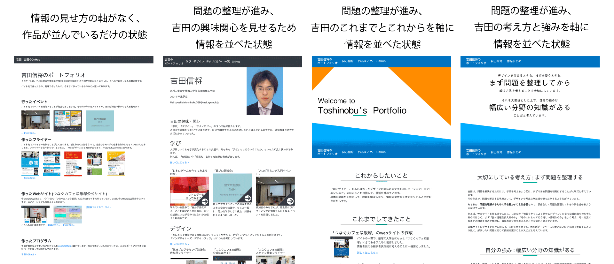

概要
自分のこれまでの仕事を人に見せる機会が増えてきたので、まとめておく場所を作ることにした。
自己紹介の際、これをパッと見せることで、「私はこんな人です」とわかるようにしたい。
苦労した点
- 情報の整理に苦戦しました
- 最初は、ただ作品を並べたページを作った。情報の見せ方(受け取らせ方)が曖昧なので、見ても何が言いたいサイトなのかよくわからなかった
- 次に、吉田の興味関心を伝えられるように並べた。が、全体のまとめがないので、このサイトをパッと見たときにどこに注目すれば良いのかわからない。
- なぜ興味関心を伝えようとしているのか、という議論も曖昧だったため、そこもよくなかった
- その次は、吉田のこれまでとこれからが伝えられるようにサイトを作り直してみた。が、やはり全体のまとめがなく、サイトの見方がわからない。
- 作品一つ一つを紹介しなければいけない、という考えに捕らわれていたのもよくなかった。そのせいで、情報の整理がうまく進められなかったように思える。
- 現行版では、「吉田の考え方」「吉田の強み」を紹介するようにしている。
- 「自分は何を売りだと思っていて、相手にどういう風に受け取って欲しいのかまで、ガイドする必要がある」という助言をもらった。そこで、考え抜いて、自分の強みを「幅広い分野の知識があること」だと定義し、その定義に従って他の情報の見せ方も整理した。
- 知識が「ある」という表現だけだと、その知識を適切に「使える」かどうかは伝わらないかもしれない。そこで、吉田の考え方も紹介することで、その穴を埋めることにした。
このポートフォリオサイトのデザインの変遷

技術的なエピソード
-
「つなぐカフェ＠飯塚」のWebサイト
を制作した際に勉強した、静的サイトジェネレータHUGOを用いて、制作しました
- なお、テンプレートから自作しています
- GitHub Pagesというサービスを用いて公開しています。
- ポートフォリオを作り始めた時点では、無料で使えるサービスはこれしか知らなかったので…
- Netlifyなどのサービスを知った今、HUGOとの連携が便利なNetlifyに引っ越そうかと思いつつ、アドレスを変えたくないのでまだ実行していません…